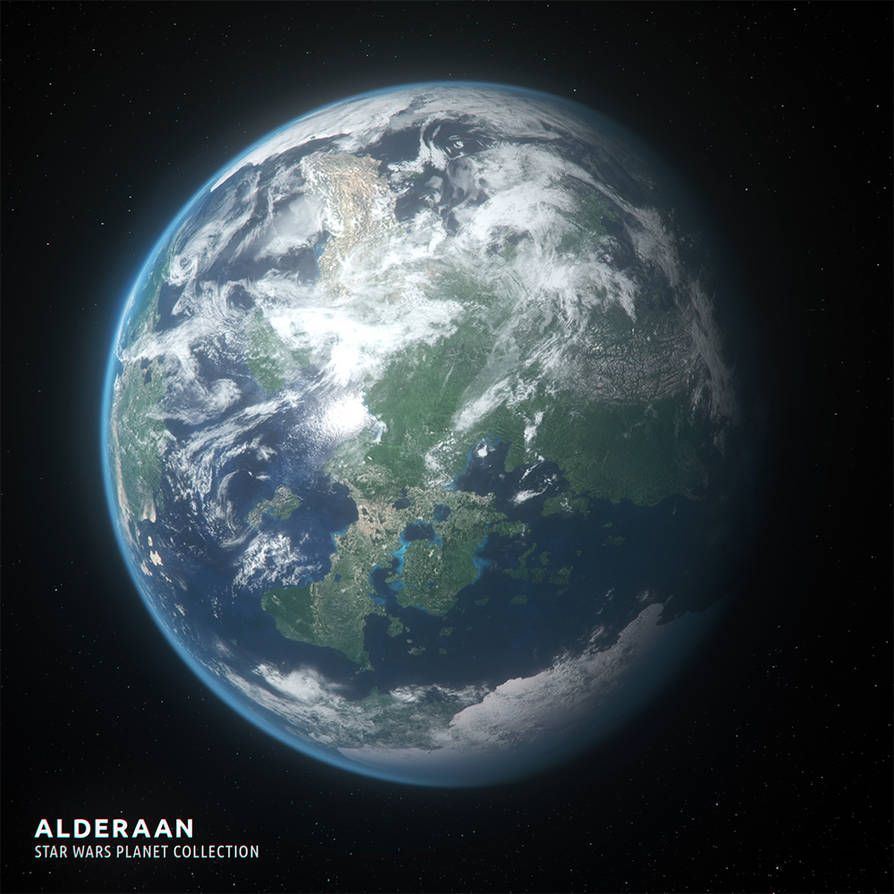
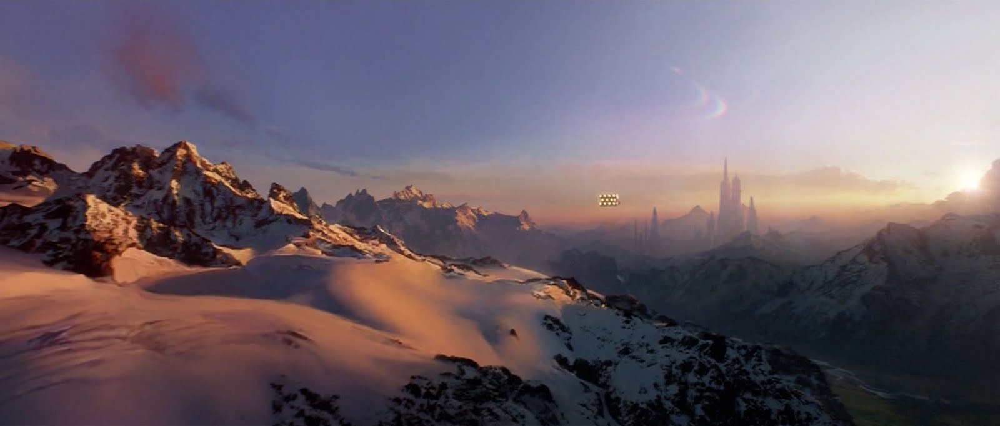

Alderaan est une planète paisible et verdoyante, célèbre pour ses montagnes majestueuses et ses vastes prairies. Située dans le Noyau, elle est connue pour sa culture raffinée et son engagement envers la paix. Gouvernée par la famille Organa, Alderaan est un bastion de l’Alliance Rebelle. Tragiquement, elle est détruite par l’Étoile de la Mort dans une démonstration de force de l'Empire, marquant un tournant décisif dans la lutte contre l’oppression impériale.
|  |  |